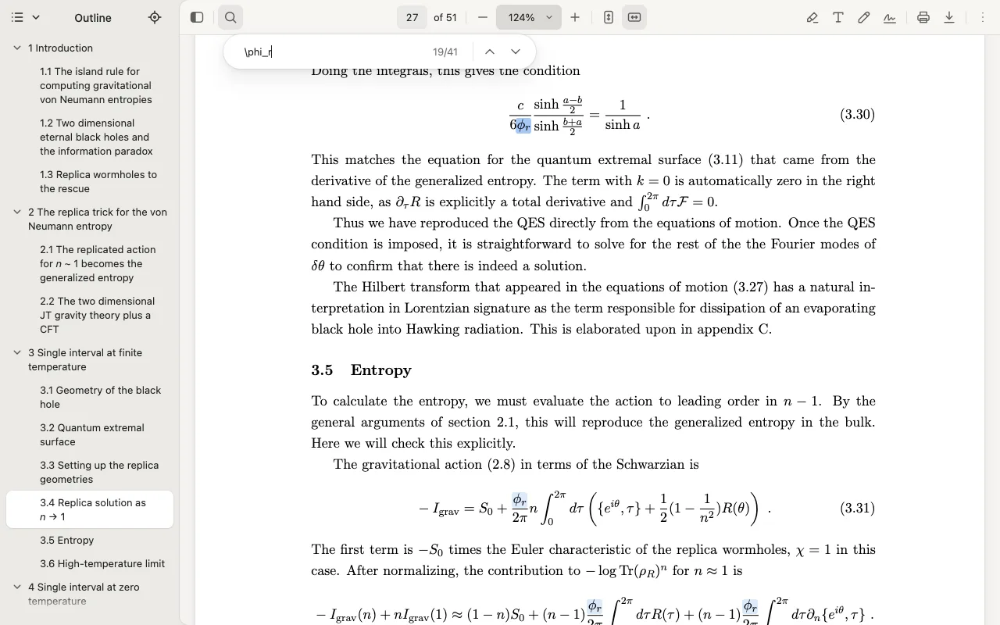
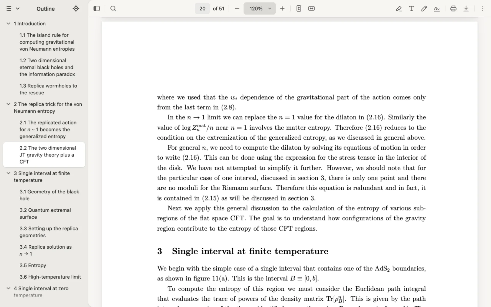
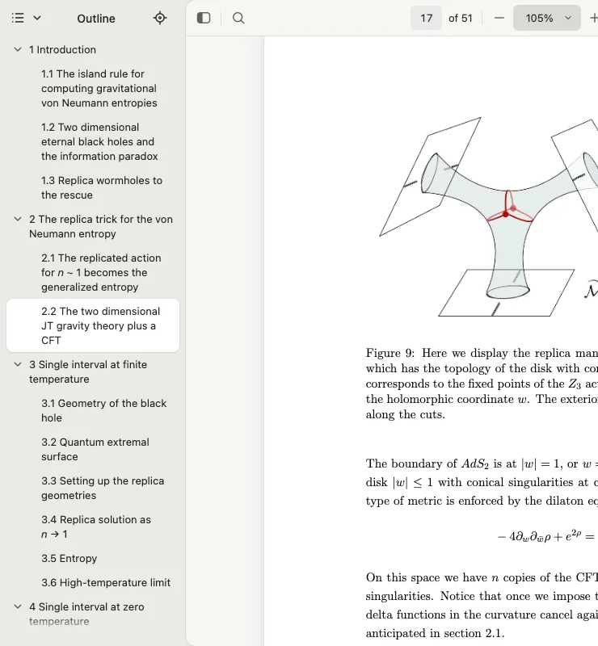

Epsilon PDF viewer for Chrome
The PDF reader made for scientific papers.
Read, search and copy papers the way you think about them: in formulas.
Everything runs in your browser. Built on PDF.js.

01 Search
Search formulas, not just words.
Type a formula in the find bar the way you would write it, in LaTeX (\alpha_1) or just as you type (alpha_1), and every place it appears is found and highlighted on exactly its symbols, however the paper spelled it.
psi(t,x)ψ(t, x)delta_ijδijn -> \inftyn → ∞

02 Peek
Peek at any link without losing your place.
Cmd/Ctrl+click a reference to an equation, a figure, a section or a citation. It opens in a panel below, its target marked, while your page stays where it is.
⌘/Ctrl + click to peekEsc closes itExpand makes it your reading place

03 Copy New selection
Select by formula, copy as LaTeX.
Drag over text and formulas: the selection follows the formula. Drag into a fraction or a bracket and it is taken whole; Shift + arrow keys step one element at a time.
Copy, and you get its TeX, ready for your notes or your own paper. A whole formula comes as $...$ or \[...\], a piece as just that piece.
04 Outline
An outline that reads like the paper.
The sidebar shows the paper's sections with their numbers and their math typeset, the section you are reading always marked.
Hover its button to glance at it over the page, click to keep it open.

05 Journals
Works with journals, not just arXiv.
Tuned on hundreds of papers from arXiv and from publishers: their fonts, brackets, braces and scripts are read as drawn.
- arXiv
- Springer
- Elsevier
- Physical ReviewAPS
- JHEP
- Hindawi
- Chinese Physics C
- CambridgeUniversity Press
- and more
And the rest
Everything you expect from a PDF reader.
Any PDF
Fast viewing, online or on your computer.
Highlight
Select text and right-click “Highlight selection”.
Add text
Type anywhere on the page.
Draw
Freehand, on any page.
Sign
Type, draw or upload your signature.
Fill in forms
Right in the viewer.
Zoom and fit
Fit to page or width, rotate.
Two pages
Single, or two side by side.
Print and save
Print it, or save the file.
Back, Forward, link
Inside the document; a link to the page you are on in one click.
Presentation mode
Full screen, page by page.
Two looks
Epsilon's calm one or Chrome's own, each light and dark.
Private by design
Your papers stay with you.
- Everything runs in your browser
- No account
- No uploads
- Nothing sent anywhere
- No analytics
What's new
Faster on long papers, more formulas read whole.
Version 1.3.3
- A search while a long paper is still being read answers at once, a small spinner till it is all read.
- No pause on slow computers when a long paper finishes reading.
- More formulas read in plain letters: D(2,1;α), SU(2), AdS₂, M = diag(λ₁, …).
- Inline formulas read whole, not cut at a colon, bracket, Re or Im, or a number: f : A → B, [Q,V] = 0, a ≠ 0.
- The tab shows the paper's title, not its file name.
- Zoom keys and buttons zoom round the middle of the view.
- Sign PDFs, and redesigned highlight, text and drawing tools in one calm palette.
- One ε icon everywhere, light or dark, and on PDF tabs from your computer.
Read your next paper in Epsilon.
For Chrome. Opens every PDF, on the web or on your computer.